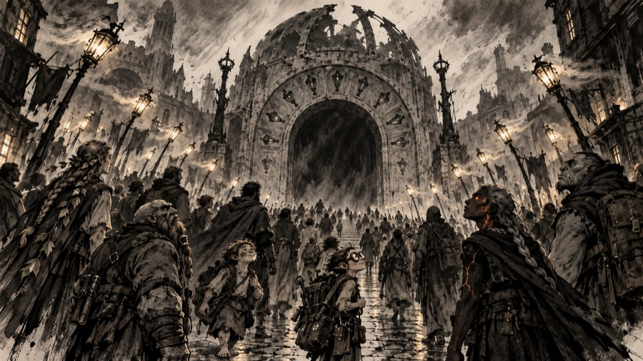
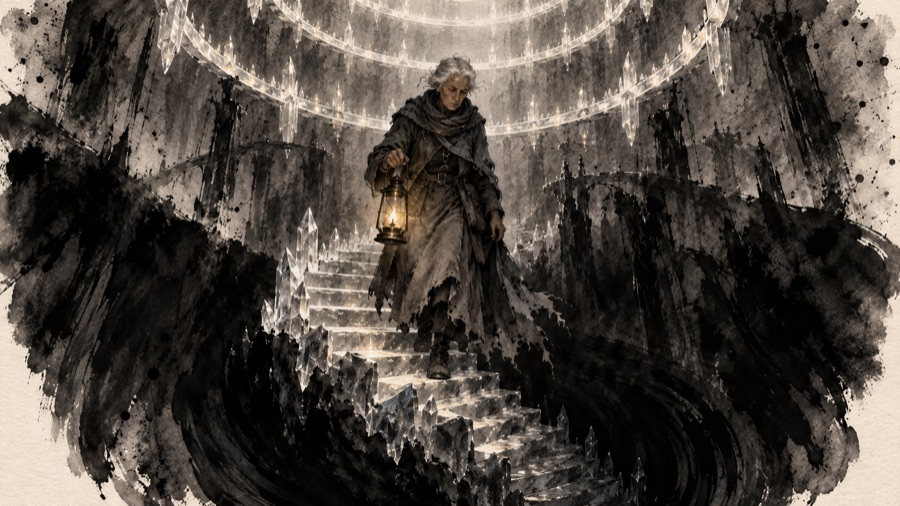
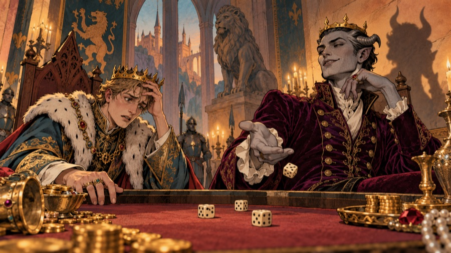
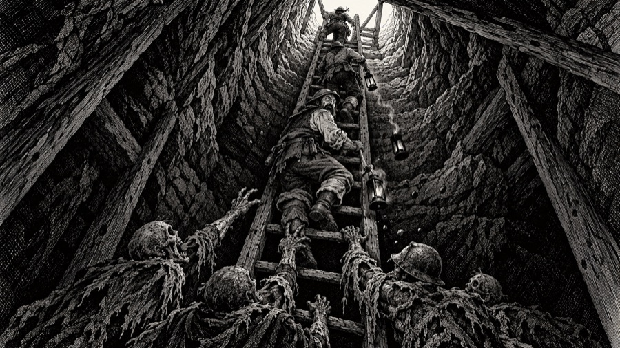

Timeline

Draft. Dates before the founding of Lanternhollow are counted back as BH ("before the Hollow"); after it, forward as YH ("years of the Hollow"). The present is 1207 YH. Dates older than about 2600 BH are myth: no one wrote them down, and the peoples tell them differently.
The Age of Embers (myth)
| When | What happened |
|---|---|
| — | The Gloam. A still, lightless sea; nothing else. |
| — | The Kindling. The First Fire burns and pushes the Gloam back; the world forms inside the hollow it makes. |
| — | The Bursting. The Fire bursts. Its far sparks become the stars, its heavy sparks sink and become the deep fires, and one ember falls on the land to be carried. The last of the Gloam is trapped under the world: Morrowgloom. |
| — | The First Lamp. Unknown hands catch the fallen ember in a lamp. Every flame since is lit from it. |
| — | The Elder Ring. The same unknown hands light a ring of lamps far below the world, around the trapped dark. No record says who they were. |
| — | The Ember Queen, a red dragon, hatches in the deep fires. She is the only living thing that claims to remember the First Fire. |
| — | The first peoples. The Cragborn cool out of the mountain roots; the Stonekin wake in the deep halls; the Sylvan come where starlight falls thickest, in the old forests; the Ashborn are born at the edges of the deep fires. Humans, Burrowfolk and Tinkerlings come later, from beyond the hills, carrying the ember with them. |
The Founding (about 2600 to 2100 BH)

| When | What happened |
|---|---|
| ~2600 BH | A cold black wind starts to breathe out of a sinkhole in the hills of the Hollowmark. Crops fail within a mile of it; lamps gutter. People call it the Breath. |
| ~2580 BH | Caedra, a human lamplighter from the coast, carries a lantern lit from the First Lamp into the sinkhole and comes back. She says the dark below is alive, and hungry, and rising. |
| ~2560 BH | Caedra founds the Order of the Lamp. Her rule is short: "Keep it lit, and keep it down." |
| ~2550 BH | The Building of the Lampway begins. Keepers, Stonekin masons of the Deephall clans and Cragborn haulers dig downward from the sinkhole, ring under ring, each ring a circuit of lamp-shrines that holds the dark beneath it. |
| ~2400 BH | The Ring of Stone (the top ring) and the Ring of Roots (the drowned caverns) are finished. |
| ~2300 BH | The Ring of Rest is cut. The Order's dead are laid in it, each with a lamp, as wardens who keep watch even in death. |
| ~2200 BH | The Pact of the Forge. The Ashborn agree to keep the deep fires of the Ring of Forges burning as a wall of heat and light. The Ember Queen allows it, for a price no one wrote down. |
| ~2120 BH | The Ring of Glass is grown, not cut: Tinkerling glassmakers and Arcanists of the young Collegium raise walls of crystal that hold light, right over Morrowgloom. |
| ~2110 BH | Digging below the Ring of Glass, the Keepers see a faint light in the rock far beneath the Pit: the Elder Ring. They learn that someone caged the dark before them. |
| ~2100 BH | The Sealing. Caedra, now old, carries her lantern down to the Ring of Glass and lights every ring on the way. She does not come back up. The Breath stops. |
The Age of Lamps (2100 to 1000 BH)
| When | What happened |
|---|---|
| ~2090 BH | The Kingdom of Aurenhold is founded over the Lampway. Its first king, Aldren the Kindler, is crowned by the Keepers on one condition: the crown must keep oil, wicks and lamplighters going down the Lampway forever. |
| ~2080 BH | The Keepers begin a sixth ring, the Unlit Ring, tunnelling round and beneath the Pit to close the cage from below and reach the Elder Ring. |
| ~1900 BH | Hollis the Mason builds the Hollow Gate, a great door over the Lampway's mouth, and the lamplighters' road down through the rings. |
| ~1700 BH | The Collegium of Sparks is founded in Aurenhold to study starlight. Its first book, the Book of First Sparks, is still the first book every Arcanist learns from. |
| ~1500 BH | Queen Tamsin the Wise has the great Mirror of Aurenhold made, a glass that shows the rings below so the Keepers can see which lamps are failing. (The mirror is lost; see Thessaly Glass in Bestiary.) |
| ~1300 BH | The Marrow Guard is raised: soldiers who stand watch in the Ring of Rest for a lifetime at a time. Generations in the deep change them. Their children are the first Marrowkin. |
| ~1150 BH | Starfall is strung. The Sylvan archer Ithrel Silverstring shoots a shade that had crept up to the Ring of Stone, from three hundred paces, by starlight alone. |
The Long Dusk (1000 BH to the founding)

| When | What happened |
|---|---|
| ~1000 BH | The Oil Tithe is cut. King Merrow the Proud spends the lamp-oil tithe on a war with the hill clans. The lowest rings go short of oil for the first time, and work on the Unlit Ring stops for good. Its shrines are never lit, but before they leave, the last Keepers there light one great crystal, the Last Lamp, to hold the unfinished ring on its own. It is still burning. |
| ~960 BH | In the Ring of Glass, unwatched, the lamps go out one by one. Morrowgloom drinks the light stored in the crystal walls and begins to grow. |
| ~900 BH | The Lantern Thief is first seen: a shadow in a stolen coat that climbs the rings at night and snuffs the lamps, carrying them off in a sack. |
| ~640 BH | The Night the River Rose. An underground river breaks into the Ring of Rest. King Oswy, who had gone down himself to relight his fathers' lamps, drowns in the flooded crypts. He is still there: the Drowned King. |
| ~600 BH | Princess Lisette, betrothed to a Marrow Guard captain who went down and never returned, walks into the Lampway in her wedding dress on her wedding day. She is still there too: the Pale Bride. |
| ~520 BH | Duke Ashvane, a fiend who climbed up out of the Unlit Ring (the unfinished ring below Morrowgloom), arrives at the court of Aurenhold dressed as a merchant prince. |
| 412 BH | The Fall of Aurenhold. King Ysmer the Last stakes the kingdom on a game of dice with Duke Ashvane, and loses. Ashvane does not take the throne; he takes the crown down into the Deep. Without a crown there is no Oil Tithe at all. The crypts wake. The city empties within a year. |
| 410 BH | The last Keepers seal the Hollow Gate and withdraw to a single temple in the hills. The Marrowkin, blamed for not saving the king, are driven out of every town. |
| 410 BH – 0 | Aurenhold falls into ruin and then into memory. The rings below go dark one by one. Monsters come up from the deep fires and in from the hills to live in the empty halls. |
The Years of the Hollow (0 YH to now)

| When | What happened |
|---|---|
| 0 YH | Lanternhollow is founded. Prospectors led by Marla Tunnick find glow crystals in old Stonekin workings under the ruins: stones that shine on their own and never go out. They do not know that the crystals are the Lampway's own lamplight, set into stone over two thousand years. They hang lanterns in the ruined hollow to work by, and the camp takes its name from them. |
| 3 YH | The Hollow Gate is found and forced open. Miners begin working the Ring of Stone, which they call "the upper workings". |
| 40–600 YH | The Glow Rush. Lanternhollow grows from a camp into a walled town. Stonekin return to their old halls; Burrowfolk dig a warren under the town; Tinkerlings set up the Lantern Guild and cut glow crystals into the lamps sold all over the world. |
| 112 YH | The Blue Door opens: the first magic shop in Lanternhollow, run ever since by someone called Maelis (no one is sure it is the same Maelis). |
| 307 YH | Skarth, a scholar of the Collegium, goes down to find the light that does not die, and finds a way not to. He has not closed his eyes since. |
| 412 YH | Kobolds under Fenwick's great-great-grandmother take the upper workings' east galleries. The kobold "kingdom" has been there ever since. |
| 612 YH | The Night of Open Doors. Miners chasing a rich seam break through into the Ring of Rest. The dead walk up the mine shafts. The Lantern Thief comes up behind them and snuffs every lamp in the town in a single night. By dawn a third of the miners are dead. |
| 614 YH | The Collapse. The miners bring down the lower shafts to wall off the crypts. Mining in the Lampway ends. Lanternhollow nearly dies. |
| 640 YH | The Delving Charter. The town council, short of everything, licenses "delvers" to go down past the Collapse and bring back what they can. Shops spring up to supply them. Lanternhollow becomes what it is now: a town that lives off the dungeon. |
| 700 YH | The Tinkerling banking house of Brassle & Vane builds Ironjaw, an iron golem, to guard its vault. |
| 803 YH | The Great Subsidence. Half of the old market quarter, the Brassle & Vane vault with it, sinks into the Deep. Ironjaw goes down with the vault and goes on guarding it. The vault has long since been broken open and scattered; Ironjaw has not noticed. |
| 911 YH | The Fall of Sister Vesper. A Keeper of the town temple who had been listening to something under the floor puts out every lamp in the temple in one night and walks down into the Lampway. |
| 1052 YH | Grimsby Coldhand is expelled from the Collegium. Over the next century his apprentices keep disappearing. |
| 1150 YH | Corvane is first heard of: a crow as tall as a man in the Ring of Stone, speaking in the voices of the dead. |
| 1183 YH | Ysolde of the Ashes burns her own tower down to be free of it, and walks into the Deep without it. |
| 1199 YH | At the harvest fair, a scarecrow with a candle in its chest walks off its pole and down the Hollow Gate. Hollow Jack has been seen in the rings ever since. |
| 1204 YH | The Guttering. Torches all over Lanternhollow start to flicker towards the Hollow Gate, as if a wind were drawing them down. In the temple, Sister Ilvane sees the Eternal Lamp shrink for the first time in its history. |
| 1206 YH | The Keepers send word to every road and town: Morrowgloom is waking, and eating faster than ever. Anyone who can carry a light and a blade is wanted in Lanternhollow. |
| 1207 YH | Now. A new delver arrives in Lanternhollow with a torch, a little food, and a few hundred gold pieces. |